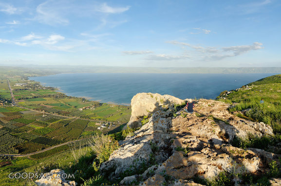
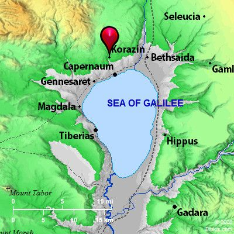
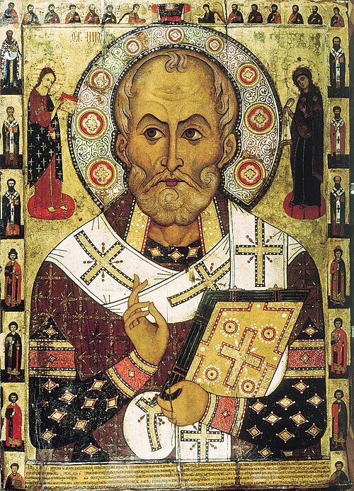

1] Zu dieser Zeit hörte Herodes (Antipas) der Tetrarch 1 die Kunde von Jesus. (Mk 6,14-29, Lk 9,7-9).
2] Und er sagte zu seinen Knechten: Dies ist Johannes der Täufer. Er ist von den Toten auferstanden, deshalb werden große Wunder durch ihn bewirkt.
3] Dieser Herodes hatte nämlich Johannes gefangen genommen, gebunden und ins Gefängnis geworfen, wegen der Herodias 2, der Frau seines Bruders Phillipus.
4] Denn Johannes hatte zu ihm gesagt: Es ist nicht autorisiert (erlaubt), dass sie deine Frau sei.
5] Und er wollte ihn töten,3 aber er fürchtete sich vor dem Volk, denn sie betrachteten ihn als Propheten.
6] Als der Geburtstag von Herodes kam, tanzte die Tochter4 der Herodias' vor den Gästen, und es gefiel Herodes.
7] Deshalb schwor er ihr mit einem Eid, dass er ihr alles, was sie verlangt, geben würde. (Esth. 5,6)5 .
8] Sie aber, von ihrer Mutter beraten, sagte: Gib mir jetzt gleich auf einen Tablett den Kopf von Johannes dem Täufer.
9] Und der König 6 war betrübt, aber wegen dem Eid und den Gästen, befahl er, dass er ihr gegeben werde.
10] So sandte er um Johannes im Gefängnis zu enthaupten.
11] Und sein Kopf wurde auf einem Tablett gebracht und dem Mädchen gegeben; und sie brachte ihn zu ihrer Mutter.
12] Und seine Jünger kamen und sie nahmen seinen Leichnam und begruben ihn und sie kamen und informierten Jesus.
13] Aber Jesus, als er das hörte, ging Er von dort weg in einem Boot in eine Wüstenregion; 7 und als die Leute es hörten, folgten sie Ihm auf dem Lande von ihren Städten aus. 8
14] Und Jesus ging an Land und sah die große Menschenmenge und Er wurde von liebendem Mitgefühl bewegt und heilte ihre Kranken.
15] Und als es Abend wurde, kamen seine Jünger 9 zu Ihm und sie sagten zu Ihm: Dies ist ein Wüstenort, und es ist spät geworden. Entlasse die Leute, so dass sie in die Dörfer gehen können, um Essen für sich zu kaufen.
16] Und Er sagte zu ihnen: Es ist nicht nötig, dass sie gehen. Gebt ihr ihnen zu essen.
17] Aber sie sagten zu ihm, wir haben nichts außer fünf Laib Brote und zwei Fische. 10
18] Und Jesus sagt zu ihnen: Bringt sie hierher zu Mir.
19] Und Er befahl der Menschenmenge sich auf den Boden zu setzen; und Er nahm die fünf Brote und zwei Fische und Er schaute auf zu den Himmeln; und Er segnete sie und Er brach sie und gab sie seinen Jüngern, und seine Jünger legten sie vor die Leute.
20] Und sie alle assen und wurden satt. Und sie lasen die Broken auf, die übrig geblieben waren:
12 Körbe voll. 11
21] Aber die Männer, die assen waren fünf Tausend, ohne Frauen und Kinder (gezählt). 12
22] Und unmittelbar danach drängte Er seine Jünger, in ein Boot zu gehen und auf die andere Seite (des Sees) zu gehen, während er die Menschenmenge entliess.
 23] Und als Er die Leute weggeschickt hatte, stieg er alleine auf einen Berg (Hügel) um zu beten; 13 und als die Dunkelheit hereinbrach, war er immer noch alleine dort.
24] Aber das Schiff war (noch) etliche Kilometer vom Land entfernt, von den Wellen geschlagen, den der Wind war ihm entgegen. 14
25] Und um die vierte Nachtwache (3:00-6:00 Uhr) kam Jesus zu ihnen. Er ging auf dem Wasser.
26] Und Seine Jünger sahen Ihn auf dem Wasser gehen. Und sie erschraken sich und sie sagten: das ist eine falsche Vision, und vor lauter Furcht schrien sie laut.
27] Er aber, Jesus, sprach sofort zu ihnen und sagte: Seid guten Mutes (Herzens), ICH BIN DER ICH BIN, 15 fürchtet euch nicht. (2.Mo 3,13-14; Joh 18,6)
28] Und Kephas (Petrus) antwortete und sagte zu Ihm: Mein Herr, wenn Du das bist, dann befiehl mir, 16 zu Dir auf dem Wasser zu kommen.
29] Und Jesus sagte zu ihm: Komme. So stieg Kephas aus dem Boot und wandelte auf dem Wasser, um zu Jesus zu kommen.
30] Aber als er den starken Wind sah, fürchtete er sich und begann zu sinken. Und er erhob seine Stimme und sagte: Mein Herr, rette mich. 17
31] Und unser Herr streckte sofort Seine Hand aus und ergriff ihn; und Er sagte zu ihm: O du Kleingläubiger, wieso warst du gespalten (hast du gezweifelt)? 18
32] Und sie stiegen ins Boot, und der Wind legte sich.
33] Und die, welche im Boot waren, kamen, und beteten Ihn an. Und sie sagten:
Wahrlich, Du bist der Sohn Gottes. 19
(Ps 2,7; 2. Sam 7,14; Ps 89,26-27; )
 34] Und sie ruderten weiter, und kamen bei Genezareth an Land.
35] Und die Menschen von dieser Gegend erkannten Ihn. Und sie sandten Kunde in alle Dörfer um sie herum, und sie brachten zu Ihm alle, die sehr krank waren.
36] Und sie baten Ihn, dass sie wenigstens nur den Zipfel seines Gewandes berühren mögen, und die, welche es anrührten, wurden geheilt. 20
1] Vers 1: Herodes der Vierfürst:
Nach dem Tode Herodes des Großen (vermutlich 4 v.Chr.) wurde dessen Gebiet in mehrere Teile aufgeteilt und auf 3 Söhne verteilt. Tetrarch (Viertel-Herrscher) ist ein griechischer Amtsbegriff der Römer für zugeteilte Verwaltungsgebiete einer Region. Es bezieht sich nicht ausdrücklich auf 4 Gebiete. Judäa wurde Herodes Archelaus zugeteilt, dem Joseph bei der Rückkehr mit Baby Jesus aus Ägypten auswich, Archelaus hätte bei guter Regierungsführung den Königstitel erlangen können, hat dies aber vermasselt und wurde nach 10 Jahren ca. 6 n.Chr. ins Exil nach Gallien geschickt. Phillippus (Vers 3) wurde Tetrach im Norden in Ituräa, Golan und Trachonitis (Lk 3,1) bis zu seinem Tode 34 n.Chr. .
Herodes Antipas erhielt Galiläa, also das Kerngebiet von Jesus Wirken mit Nazareth, Kapernaum, dem See Genezareth, etc.. Antipas war scharf auf das Gebiet von Archelaus und wollte ihn von Anfang an bim Cäsar anschwärzen. Antipas herrschte bis 39 n.Chr, und wurde dann auch ins Exil verbannt. Er war zu fest in seine politischen Ränkespielchen und Extravaganzen verwickelt, als dass er sich ernsthaft um geistliche Werte gekümmert hätte, obwohl er offensichtlich an Totenauferstehung glaubte, siehe nächster Vers 2.
2] Vers 3: Herodias war die Tochter von Aristobus, einem anderen Sohn von Herodes dem Großen. Sie heiratete also ihren Onkel Philippus, was Inzucht ist. Und dann beging sie Ehebruch und wurde die Frau ihres anderen Onkels Herodes Antipas.
Inzucht und Ehebruch. Wie soll man sagen, typisch & abscheulich für machtgierige Politiker, damals wie heute.
3] Vers 5: Herodes wollte ihn töten, aber er fürchtete sich vor dem Volk,..
Antipas war skrupellos aber auch feige. Viele Politiker und Menschen in Regierungen sind skrupellose Mörder. Es ist schwer nachvollziehbar, wie sich heute viele von Mainstreammedien gehirnwaschen lassen und dadurch fatal & blinde den Behörden und Regierungen vertrauen, welche durch Impfungen organisierten brutalen Völkermord betreiben und Menschen in unnütze Kriege zu getötet werden schicken. Sie kennen die Bibel nicht.
4] Vers 6: tanzte die Tochter der Herodias.
Salome war die Tochter von Herodias mit Philippus. Gemäss Geschichtsschreiber Josephus soll auch sie einen weiteren Sohn Herodes des Großen geheiratet und damit die Inzucht noch mehr verschlimmert haben.
5] Vers 7: Deshalb schwor er ihr mit einem Eid, dass er ihr alles, was sie verlangt, geben würde.
Dieser hochmütige möchtegern König (seine Position konnte ihm zu jeder Zeit sofort vom Kaiser weggenommen werden, was dann im Jahr 39 passierte, wo er ins Exil verbannt wurde), dieser grössenwahn-sinnige Herodes Antipas wollte die Geschichte vom großen Weltreich Herrscher Ahasveros in Esther 5,6 imitieren. Lies Esther Kap 5,6 bis 7,10. Nur war Esther eine edle Seele im Gegensatz zur Schlangenbrut Salome und Herodias. Esther bat um ihr Leben und das ihres Volks der Juden, welche der damalige Hitler (Judenmörder) Haman umbringen wollte, während diese hier (Herodias/Salome) den Kopf des grössten jemals geborenen Menschen (abgesehen von Jesus) fordern.
6] Vers 9: .. der König..
Herodes Antipas war nicht König, sondern nur Vierfürst. Aber das Volk hat ihn vermutlich gewohnheitsmässig oft als König angesprochen, was ihm natürlich geschmeichelt hat. Das von Cäsar dem Vater von Antipas, Herodes dem Großen, zugesprochene "Königreich" wurde nach dessen Tod (ca. 4 v.Chr.) in mehrere Verwaltungs - Teile aufgesplittet und darüber die Tetrarchen gestellt. Antipas erhielt nur Galiläa, nicht Judäa. Judäa kam nach der Verbannung von Archelaus im Jahr 6 n.Chr. unter direkte Römische Verwaltung. Zur Zeit von Jesus war dies Pilatus.
Dass der Heilige Geist Matthäus erlaubt, hier "König" zu verwenden, hat eine Spur von Ironie. Jesus ist eigentlich der wahre König der Juden. Messias bzw. Christus ist die biblische Bezeichnung des Retterkönigs.
Die Herodianer stammen von einem Überrest der Idumäer (Edomiter), welche von Esau abstammten. Dieser Überrest hat sich dem Überrest der Juden angeschlossen. Es war für Israel nicht erlaubt, einen Fremden über sich als König zu wählen. Die ganze Herodes Dynastie war quasi illegal, vom Kaiser in Rom bestimmt, nicht vom Herrn JaHuUaH.
5. Mose 17: 14 Wenn du in das Land kommst, das der HERR, dein Gott, dir gibt, und es in Besitz nimmst und darin wohnst und dann sagst: »Ich will einen König über mich setzen, wie alle Heidenvölker, die um mich her sind!«,
15 so sollst du nur den zum König über dich setzen, den der HERR, dein Gott, erwählen wird. Aus der Mitte deiner Brüder sollst du einen König über dich setzen; du kannst keinen Fremden über dich setzen, der nicht dein Bruder ist. (Schlachter 2000)
Dass Herodes der Große den Tempel gebaut hatte, konnte ihn in Gottes Augen nicht besser hinstellen. In Joh. 2,19 deutet Jesus den Juden das Ende der Steintempel Ära an, der echte Tempel ist jetzt der Leib des Christus gebaut mit lebendigen Steinen.
In Matth. 24,1-2 prophezeit Jesus die Zerstörung des Tempels den Herodes der Große bauen liess.
--
Falls du dich fragst, wieso ich solche Dinge so ausführlich beschreibe: Es ist für uns heute wichtig, sich in die damalige Zeit hinein versetzen zu können, also ist es wichtig, die Zeitgeschichte zu kennen. Dies gibt einem Wort wie "der König" hier in diesem Vers 9 ein ganz anderes Gewicht, als wenn man keine Ahnung hat. Es stärkt die Schärfe des Schwertes des Wortes Gottes, die Umstände zu verstehen, wo es gesprochen wurde.
7] Vers 13] Herodes hat gerade den grössten jemals geborenen Menschen (Mt 11,11) brutal ermordet. Gott hat dies zugelassen, sogar während Jesus selber auf der Erde war. Jesus hat es auch nicht verhindert.
Es bricht eine neue Ära an. Mt. 11,12. Das Königreich der Himmel ist nicht von dieser Welt, deshalb hat Gott oder Jesus nicht eingegriffen.
Wir können nur erahnen, was Jesus alleine auf dem Boot mit dem himmlischen Vater besprochen hat. Angesichts der realen Gefahr musste Jesus sicherstellen, dass er nicht außerhalb von Jerusalem getötet werden kann, damit er seinen wichtigsten Auftrag, die Sünden der Welt auf sich zu nehmen am Kreuz, zum Sieg verhelfen kann, und somit die Wirklichkeit des Königreichs der Himmel auf Erden etabliert, durch die Aussgiessung des Heiligen Geistes nach seiner Auferstehung und Himmelfahrt.
In Lk 13,31-33 lässt Jesus Herodes dem Fuchs nach Morddrohungen ausrichten, dass es nicht möglich ist, dass Er außerhalb von Jerusalem stirbt. Jesus prophezeit sein Leben gemäss dem Willen des Vaters, und keine irdische Macht kann dies ändern. Und Jerusalem war außerhalb des Machtbereichs des Herodes Antipas.
Wir sind also nicht schutzlos der Willkür von korrupten Mörder Regierungen ausgesetzt, sondern wir sollen Gottes Willen über unser Leben aussprechen und einfach innerhalb von Gottes Willen leben und um Barmherzigkeit für unsere Fehler bitten. "Unser Vater im Himmel ... erlöse uns von dem Bösen ... den Dein ist das Reich. Amen.
Jesus musste als Samenkorn am Kreuz in Jerusalem sterben, damit aus Ihm, dem einen Korn, die vielen Körner entstehen. Joh 12,23-24: Jesus aber antwortete ihnen und sprach: Die Stunde ist gekommen, dass der Sohn des Menschen verherrlicht werde! 24 Wahrlich, wahrlich, ich sage euch: Wenn das Weizenkorn nicht in die Erde fällt und stirbt, so bleibt es allein; wenn es aber stirbt, so bringt es viel Frucht.
Wir, die vielen Geschwister von Jesus als der Leib Christi, die Ekklesia, haben nun die Vollmacht und die Schlüssel, selbst Mörder Regierungen wie ein Herodes zu entfernen durch Gebet. Mt 18,18-20.
Dies ist der Vorsatz Gottes, die Ekklesia hervorzubringen und mit ihr seine Königsherrschaft von Jesus auf Erden zu etablieren. In Apostelgeschichte sehen wir dann, dass nach dem Gebet der Ekklesia Petrus vor der Ermordung befreit wurde und wenige Tage danach Herodes Agrippa, der Apostel Jakobus Mörder, von einem Engel geschlagen wurde und von Würmern gefressen starb.
Es ist also nicht so, dass es Gott oder Jesus gleichgültig ist, was die korrupten Herrscher den Männern und Frauen Gottes und den gerechten Menschen antun. Aber Gott ist auf das Gebet der Ekklesia angewiesen, um dies machen zu können. Wir haben die Schlüssel auf Erden. Er hat die Schlüssel im Himmel. Beide müssen betätigt werden, damit Gott eingreift.
Lies auch Eph 3,10 und 1. Kor. 15, 23.25. Mehr dazu im Buch: "satans grösster Alptraum: Ekklesia, die Exekutiv-Versammlung des Messias Königs Jesus".
8] Vers 13: und als die Leute es hörten, folgten sie ihm auf dem Lande.
Die Leute lassen Jesus kaum Zeit zum Trauern oder Beten. Er musste alleine auf einem Boot sein, um überhaupt in der Stille sein zu können. Wir müssen auch oft erfinderisch und vorallem auch determiniert sein, um in die Stille in die Gemeinschaft mit Gott zu kommen.
9] Vers 15: Und als es Abend wurde, kamen seine Jünger zu Ihm und sie sagten zu Ihm: Dies ist ein Wüstenort, und es ist spät geworden. Entlasse die Leute, so dass sie in die Dörfer gehen können, um Essen für sich zu kaufen.
Auch die Jünger sorgten sich um die Leute, aber in einer rein natürlichen Weise. Was Jesus im Begriff ist zu machen, zeigt die überragende Majestät der geistlichen Realität, der Kenntnis des Willens des Vaters gegenüber dem rein natürlichen menschlichen Sich-Sorgen und Bemühen. Jesus erwartet von uns, dass wir in diese Art von Geistesgegenwart hineinkommen und seine wunderbaren Werke in der Führung des Heiligen Geistes tun.
10] Vese 16 & 17: Gebt ihr ihnen zu essen... Wir haben nichts außer 5 Brote und 2 Fische.
Wenn Jesus etwas Unmögliches von uns verlangt, stehen wir kurz vor einem Wunder.
11] Vers 20: Und sie lasen die Broken auf, die übrig geblieben waren: 12 Körbe voll.
Die Wunderwirkung Gottes durch die Hände des Christus überragt überfliessend unsere natürlichen Fähigkeiten und Begrenzungen und kann nebenbei auch noch geistliche Symbolik einflechten: 12 Körbe voll.
Zwölf Stämme der zwölf Söhne Israels (Jakobs).
Zwölf Apostel.
Das Neue Jerusalem hat zwölf Tore mit den Namen der zwölf Stämme, und zwölf Grundsteine mit den Namen der zwölf Apostel. Es misst 12000 Stadien, und die Mauern sind 12x12 Ellen hoch. (Offenbarung 21,12-17).
In einer Zeit, wo machtgierige Möchtegernherrscher Gesandte Gottes wie Johannes ermorden, vollbringt Jesus Zeichen und Wunder in der Kraft der Neuen Ära des Königreichs der Himmel, im zentralen Willen Gottes und gemäss dem ewigen Vorsatz Gottes, des Neuen Jerusalem, wo Gott König ist und nichts Ungerechtes sein wird. Seine 12 Apostel sind gerade live dabei, zu den Grundsteinen der ewigen Stadt Gottes zu werden.
12] Vers 21: Aber die Männer, die assen waren fünf Tausend, ohne Frauen und Kinder (gezählt).
Mit Frauen und Kinder waren dies wahrscheinlich über 10'000 Menschen. Es war schon gegen Abend, als Jesus anfing, die Brote zu brechen. Um alle zu bedienen, mussten sich die Brote quasi auch wärenddem vermehren, als die Jünger sie zu den in Gruppen gesiedelten Menschen brachten.
 Ich habe mindestens zwei oder dreimal davon gehört oder gelesen, dass Nahrungsvermehrungs Wunder in den letzten paar Jahrzehnten passiert sind. Auch von Nikolaus von Myra, dem Aufseher
der Gemeinde in Myra wurde
überliefert, dass er unter anderen
außergewöhnlichen Wundern in einer
Lebensmittelknappheit Lebensmittel
vermehrt hat. Am 6. Dezember ist
sein Todestag (ca. 326 oder 345 n.Ch.)
Auch wenn vieles mit der Zeit
dazugedichtet wurde, haben die Wunder die Gott durch ihn gewirkt hat sicher einen Kern Wahrheit. Und nein, er hatte keine kitschige rote Mütze oder Mantel und war nicht der "Weihnachtmann". In den ersten Jahrhunderten sind vorallem einzelne Gottesmänner und Frauen durch ihr Leben hervorgetreten und hatten eine solche Ausstrahlung, dass sie mit einem Heiligenschein gemalt wurden. Die Ekklesia als solches wurde bald vom formellen organisierten Kirchentum durchsäuert und uneffektiv und es bildete sich ein Klerus. Heute müssen wir endlich lernen, als Ekklesia oder Mini-Ekklesia als 2 oder 3 versammelt im Namen Jesus (Mt 18,18-20) diese Austrahlung zu haben und in Vollmacht die Wuderwerke von Jesus ausführen.
Wenn wir als Leib Christi im Willen Gottes handeln, ist alles möglich. Jesus hat gesagt, dass wir seine Werke auch tun werden und sogar grössere. Wahrlich, wahrlich, ich sage euch: Wer an mich glaubt, der wird die Werke auch tun, die ich tue, und wird größere als diese tun; denn ich gehe zum Vater. Joh. 14,12.
Glaube an Jesus zeigt als Frucht, dass du seine Werke tust und sogar grössere, in der Kraft des Heiligen Geistes, den Jesus gesandt hat, nachdem er zum Vater ging. Dieser Geist umfasst das vollbrachte Erlösungswerk Christi, sein Menschsein, seine Gottheit und ist die Wirklichkeit des Leibes Christi. Wir als der Leib Christi jetzt auf Erden ist etwas, was es zur Zeit Jesu auf Erden nicht gab, und insofern ist alles, was wir in der Wirklichkeit des Leibes Christi im Lebensstrom des Heiligen Geistes tun, grösser als seine Werke. Er ist ja das Haupt des Leibes, von dem aus die Befehle gehen.
13] Vers 23: stieg er alleine auf einen Berg (Hügel) um zu beten;
Endlich konnte Jesus ungestört beten, dafür musste er aber auf Schlaf verzichten.
Ich empfinde es als eine der grössten Herausforderungen in meinem Christenleben, nicht vom Gebet und Gemeinschaft mit Gott abgelenkt zu werden. Es ist vital wichtig, dass wir wie Jesus unseren Himmlischen Vater im Gebet ungestört aufsuchen.
14] Vers 24: Der See Genezareth ist ca. 6-10 km Breit und ca. 12-15 km lang (von Norden nach Süden). Auch Meer von Galiläa genannt. Jesus befand sich etwa vis-à-vis von Genezareth, als er auf den Berg stieg.
15] Vers 27: Jesus sagte: ... ICH BIN DER ICH BIN.
אֵנָא אנָא ENA 'NA.
Glenn David Bauscher übersetzt mit "I AM the Living God" und weist zu Recht in seinen Kommentaren zu seiner exellenten Übersetzung aus dem aramäischen ins Englische darauf hin, dass Jesus hier bewusst den Namen Gottes ausspricht auf Aramäisch, wie ihn Gott in 2. Mose 3,14 genau so dem Mose auf Hebräisch gesagt hatte: אֶֽהְיֶ֖ה אֲשֶׁ֣ר אֶֽהְיֶ֑ה Ehyeh asher ehyeh (Ich Bin, der Ich Bin der Name Gottes JaHuUaH (oder JeHuUaH, Jahweh) abgeleitet werden: יְהֹ וָ֞ה .
2.Mo 3, 13 Und Mose sprach zu Gott: Siehe, wenn ich zu den Kindern Israels komme und zu ihnen sage: Der Gott eurer Väter hat mich zu euch gesandt!, und sie mich fragen werden: Was ist sein Name? — was soll ich ihnen sagen? 14 Gott sprach zu Mose: »Ich bin, der ich bin!« Und er sprach: So sollst du zu den Kindern Israels sagen: »Ich bin«, der hat mich zu euch gesandt. (Schlachter 2000)
Die Aramäische Peshitta des Alten Testaments lässt diesen Teil von 2.Mo 3,14 unübersetzt auf hebräisch, also wird dieser Name erst im Neuen Testament auf Aramäisch offenbart.
Im Unterschied zu 2.Mo 3,14 wo die Imperfekt Verbform verwendet wird und es deshalb oft mit der Zukunftsform übersetzt wird: Ich werde sein, der ich sein werde, macht Jesus auf Aramäisch jetzt im Neuen Testament klar:
Ich bin der Ich bin. Ena Ena ist nur ein Pronomen (Ich Ich) und nicht mehr ein Verb, aber der Zusammenhang macht klar, dass es "Ich bin Ich bin" bedeuted. Jesus verwendet ca. 20-25 mal im Neuen Testament den Doppelausdruck: ENA eNA. Die einzige Stelle im NT, wo sonst jemand außer Jesus es verwendet ist Joh. 9,9, der blind Geborene. Er bestätigt auf Zweifel der Leute hin, ob er derjenige sei, der blind geboren sei: Ich bin es, und bestätigt damit, dass das Verb "bin" mitgehört wird. Es ist göttliche Ironie, dies genau von diesem von den Pharisäern verachteten Mann bestätigt zu kriegen.
16] Vers 28: Mein Herr, wenn Du das bis, dann befiehl mir, zu Dir auf dem Wasser zu kommen.
Petrus scheint vom Glauben des Hauptmanns in Kap. 8, 8-10 gelernt zu haben, dass wenn Jesus als höhere Autorität etwas befiehlt, dann geschiet es auch. Jesus blieb fast nicht anderes übrig, als dieser Bitte nachzukommen. :-).
17] Vers 30: Mein Herr, rette mich:
Hier wird ein starkes Wort (prq) für errette mich verwendet, in einer typischen Situation, wo man heraus gerettet werden muss. Jedoch wird dort, wo das Griechische oft mit retten / Errettung übersetzt, das aramäische Wort für Leben verwendet. Dies macht klar, dass das Aramäische ohne weiteres die Wortwahl für retten, erretten verwenden könnte, aber es wird oft das Wort "Leben geben" oder beleben, lebendig machen benutzt, weil unsere ewige Errettung nicht nur eine äussere oder juristische Handlung ist, sondern eine innerlich geistlich organische, wir erhalten das ewige Leben, und dadurch werden wir auch gerettet.
Das Aramäische Neue Testament betont viel stärker das göttliche Leben als die Griechische Übersetzungen.
18] Vers 31: O du Kleingläubiger, wieso warst du gespalten (hast du gezweifelt)?
Wenn wir ein klares direktes Wort oder Befehl von Jesus haben, müssen wir lernen, nicht unsere Gedanken und Herz spalten zu lassen, auch bei starkem Gegenwind.
19] Vers 33: Wahrlich, du bist der Sohn Gottes.
Wieso bezeichneten die Jünger Jesus hier als Sohn Gottes? Das Alte Testament bezeichnet den verheissenen Messias König an mindestens diesen drei Stellen als Sohn Gottes: Psalm 2,7; 2. Sam 7,14; Psalm 89,26-27.
Angesicht dieser enormen Vollmachts - Demonstration: über den physikalischen Gesetzen der Schwerkraft zu stehen, sich als der ICH Bin der ICH BIN zu bezeichnen, Petrus zu retten und den starken Wind zu stillen, erkennen die Jünger, dass sie es mit Gott in Jesus zu tun haben. Scheinbar war zumindest oberflächlich bekannt, dass der Messias auch der erstgeborene Sohn Gottes ist.
Jesus sagt nachher in Kapitel 16,16-17 dem Petrus, dass die Offenbarung, dass er der Messias, der Sohn des lebendigen Gottes sei, vom Vater kommt, und nicht nur aufgrund der Beobachtung von außergewöhnlichen Wundern.
20] Vers 36: Und sie baten Ihn, dass sie wenigstens nur den Zipfel seines Gewandes berühren mögen, und die, welche es anrührten, wurden geheilt.
Jesus war seit gut 24 Stunden auf und hat vermutlich etwas ausgeruht und gegessen, und während dessen rührten sie den Zipfel seines Gewandes an. Heute hat sich Jesus "vervielfältigt" in Millionen von Glaubenden, und Er selber tut für unseren Glauben Fürbitte im Himmel beim Vater, damit wir als Leib seine Werke der Heilung, Wunder und Predigen der Wahrheit weiterführen.
Jesus4you.ch
- Das Evangelium des Königreiches der Himmel nach Matthäus -
S.